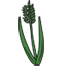
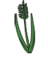

Crop Information
Use this information to make your choice.
| if Wet: | if Dry: | |
|---|---|---|
| Crop A  | ||
| Crop B |
Turns Taken
Number of turns

Choose which crop you'd like to plant this season: either crop A or crop B. You will make money on your crops depending on the weather that season. To see how much money you'll make on each crop depending on the weather, see the graph on the left below. Thanks for playing!
| if Wet: | if Dry: | |
|---|---|---|
| Crop A  | ||
| Crop B |